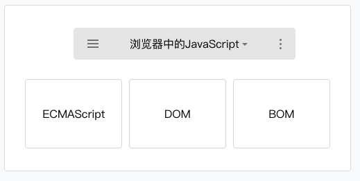

在大部分开发者看来，ECMAScript和JavaScript表达的是同一种含义，但是严格的说，两者的意义是不同的。
ECMAScript是一种由Ecma国际通过ECMA-262标准化的脚本程序设计语言，
JavaScript 是 ECMAScript 的一种实现。
理解 JavaScript 是 ECMAScript 一种实现后，可以帮助开发者理解小程序中的 JavaScript同浏览器中的 JavaScript 以及 NodeJS 中的 JavaScript 是不相同的。
ECMA-262 规定了 ECMAScript 语言的几个重要组成部分：
语法
类型
语句
关键字
操作符
对象
浏览器中JavaScript 构成如下图：

图2-15 浏览器中的 JavaScript
浏览器中的JavaScript 是由 ECMAScript 和 BOM（浏览器对象模型）以及 DOM（文档对象模型）组成的，Web前端开发者会很熟悉这两个对象模型，它使得开发者可以去操作浏览器的一些表现，比如修改URL、修改页面呈现、记录数据等等。
NodeJS中JavaScript 构成如下图：

图2-16 NodeJS中的 JavaScript
NodeJS中的JavaScript 是由 ECMAScript 和 NPM以及Native模块组成，NodeJS的开发者会非常熟悉 NPM 的包管理系统，通过各种拓展包来快速的实现一些功能，同时通过使用一些原生的模块例如 FS、HTTP、OS等等来拥有一些语言本身所不具有的能力。
那么，同开发者所熟悉的这两个环境是不同的，小程序中 JavaScript 构成如图2-17所示。

图2-17 小程序中的 JavaScript
小程序中的 JavaScript 是由ECMAScript 以及小程序框架和小程序 API 来实现的。同浏览器中的JavaScript 相比没有 BOM 以及 DOM 对象，所以类似 JQuery、Zepto这种浏览器类库是无法在小程序中运行起来的，同样的缺少 Native 模块和NPM包管理的机制，小程序中无法加载原生库，也无法直接使用大部分的 NPM 包。